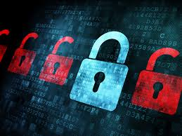
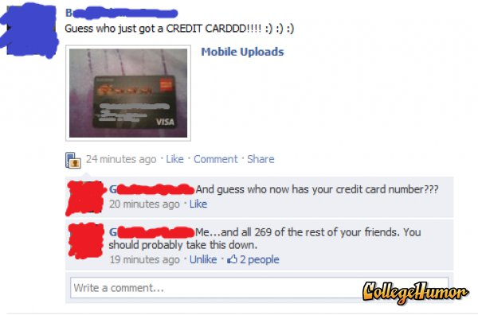

The inernet is a relatively unsafe medium for sharing information and therefore is at high risk for things like fraud and intrusion. The primary method of protecting information on the internet is through encryption which is where information is encoded so that other people cannot read it. Some common ways of attacking a computer are through malicious software, denial-of-service attacks, and phishing. A denial-of-service attack is when someone tries to prevent you from being able to access a computer resource and 16.8% of surveyed international businesses had one in 2010. The global losses from phishing were estimated at $1.5 billion in 2012.

If you know a bit about coding, think how easy it would be for an experienced hacker to write a loop that checks each word in the english dictionary as a password. Adding a few numbers on top of that won't make too much difference either. A 6-character password that is all lowercase takes about 10 minutes to crack. On the other hand, a 9-character password with uppercase, numbers, and symbols takes 44,530 years! Keep that in mind the next time you set a password!
Protecting Ourselves
There are several things we can do to better protect ourselves from hackers. Probably the most important is to make our passwords more secure. One very secure method of creating a password is to randomnly select 4 words from a dictionary. This is actually more difficult for hackers to guess than a password with numbers and symbols such as p@$$W0rd and it is also easier to remember! Another option is to use websites such as LastPass which creates very secure passwords for you and enters them into the websites for you so you don't even need to remember them.
It is also very important to be smart about the way we use social media. Never post any information on the internet that you wouldn't want someone to be able to access. It might sound ridiculous but people acutally post pictures of things like credit cards on the internet! Also, be careful about posting things like your address and phone number.

Due to the increasingly accessible internet, fraud is a big issue in the world today and it is important to take the steps neccessary to protect our information.
Sources:
http://gizmodo.com/5753868/how-long-it-takes-hackers-to-crack-your-password
ttp://en.wikipedia.org/wiki/Internet_security